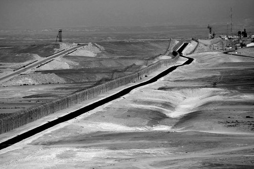

A Prime Minister
The Rebbe was not wasting valuable time (G-d forbid) during those dozens of farbrengens when he spoke about political matters. With his holy and prophetic vision, the Rebbe foresaw the complicated state of affairs in which Eretz Yisroel is trapped today, and he knew that only a firm and strong polic

If current estimates prove correct, we will soon be marching towards yet another election in Eretz Yisroel. Prime Minister Binyamin Netanyahu is most interested in getting the process started and taking full advantage of his current level of popularity, leading the way to a great political triumph at the polls. He looks to his left and to his right, and he realizes that he has no serious challengers – not Yair Lapid, not Shaul Mofaz. Therefore, he wants his path to a third term to be a quick one, before someone of real stature comes along.
The bad news is that if the elections were held now, the ultra-Orthodox and nationalist right-wing parties would be caught unprepared. The National Union (Ichud HaLeumi) is still attempting to unite the divergent wings of its party as they wrestle with the pros and cons of uniting with Bayit HaYehudi (The Jewish Home).
Even the NRP has only started getting ready for the campaign. It is now encouraging the enrollment of new party members in preparation for internal elections to choose a party chairman. Its leaders still appear to be in a state of deep hibernation, thereby convincing its backers to vote for the Likud Party instead.
The one who reaps all the benefits from this chaos is the prime minister. For whatever reason, he continues to receive widespread support from the right-wing electorate. According to recent public opinion polls, the right-wing parties are in danger of failing to pass the electoral threshold required for parliamentary representation. This means that neither the National Union nor the NRP can be certain that they will have seats in the next Knesset. The message of division and factionalism emerging from the nationalist camp is driving away potential voters.
A PRIME MINISTER WITH A BEARD
We can only imagine what would happen if these politicians would just once listen to the Rebbe, Melech HaMoshiach, and try to make a genuine effort to run together as a united list of Knesset candidates – a technical bloc for electoral purposes. Shas could raise the flag of social issues, Agudas Yisroel – the flag of Torah study, the National Union – the territorial integrity of Eretz Yisroel, and the NRP – the cause of Jewish education. After the elections, each party goes its own separate way while continuing to fight for its respective principles. The difference is that their overall electoral strength will increase exponentially when they run as a united front, preventing thousands of votes from going to waste.
Instead of disappointed voters running to the Likud, Likud voters would run to cast their ballot for this technical bloc comprised of all the rightist and religious parties. Furthermore, it goes without saying that today’s political battles would be replaced by totally different discussions of far greater importance.
Chabad Chassidim possess the strength to be the unifying force among all sectors of the Jewish People, without any involvement in politics or fostering a state of belligerence that everyone detests. For the Rebbe, there is no difference between someone working against the political interests of ultra-Orthodox Jewry and any other Jew. As the faithful shepherd of our generation and the leader of the entire nation of Israel, the Rebbe’s love for his fellow Jews is a love of ultimate truth. Thus, Chabad Chassidim must be wary about being drawn into politics. It stands to reason that the next elections will be extremely lively and exciting, and they will surely raise some burning issues, causing many people to lose their feeling of tranquility. However, despite all this, we must not forget that Chabad is not a political party. It is our responsibility to distance ourselves from any political disputes or quarrels, thereby remaining loyal to our one obligation: fulfilling the Rebbe’s directives to the letter without diverting one iota from his instructions.
EGYPT: A STRATEGIC THREAT
Recent statements by former General Security Services director Yuval Diskin, condemning all preparations for a possible attack against Iran, have once again aroused the public debate surrounding this issue. Back in the days during Menachem Begin’s government, all such discussions were conducted secretly and the subsequent decisions were made behind closed doors. Today, every national security professional who retires from active duty allows himself to express his opinions openly on a variety of sensitive issues.
In one of his statements in response to Mr. Diskin’s declarations, Defense Minister Ehud Barak noted that stopping the Iranian nuclear program was absolutely essential to Israel’s existence. He stated that if Iran would succeed in creating an atomic bomb, it would bring every country in the region into a nuclear arms race. He added that the new Egypt can be expected to join this arms race, constituting a strategic threat to the citizens of Israel.
Facts now in evidence clearly show that there is no peace agreement with Egypt. The terrorist attack that took place near Eilat six months ago merely proves this absurd reality. The Egyptian army apparently cooperated with the terrorists, or at the very least, they made no effort to stop them. The recently nullified economic agreement on gas demonstrates that the Sinai is no longer ours – and neither is the peace.
They’ve tried to tell us for thirty years that we’re at peace with Egypt. Every once in a while, an Israeli politician got his picture taken with the president of Egypt, and that was the end of it. However, while Egypt didn’t make any actual threats upon us, the strategic threat remained. The regime that had supported the peace treaty has now collapsed, and it has been replaced by an openly hostile one.
The story of what’s happening in Egypt is somewhat reminiscent of what happened in Iran. We also had friendly relations with them in the past. The government of Israel once even proposed offering assistance to the Iranians on two very essential issues: the country’s irrigation system and – arming them with missiles capable of carrying nuclear warheads…
The difference is that we haven’t given up anything to Iran. A revolution took place, a regime was overthrown, and we realized that military strategy is something far too complex to place at risk in order to curry favor with our Arab neighbors.
In Egypt, however, the situation is entirely different. Begin’s government destroyed thriving settlements, relinquishing territory three times the size of Eretz Yisroel – all for a treaty that isn’t worth the paper it was signed on.
We now can understand what the Rebbe said in his public statements against the Sinai withdrawal, when he also mentioned the large training areas that Israel would abandon when it left the Sinai. Back then, it seemed that we were perhaps talking about some trivial matter. Today, however, we have discovered that this is something that causes grievous harm to the security of Eretz Yisroel.
A CHANGE IN DIRECTION
During the last thirty years, there has been little difference between the peace we have with Egypt and the de-facto peace we have with Syria. Damascus feels threatened by us and is afraid to initiate hostilities. True peace is when one side firmly preserves tranquility in the area and doesn’t allow every little gang to threaten regional security.
Today, as we observe the G-dly vision of the prophet of the generation, the Rebbe, Melech HaMoshiach, we can understand how everything the Rebbe cried out about has been absolutely precise.
The Rebbe was not wasting valuable time ch”v during those dozens of farbrengens when he spoke about political matters. With his holy and prophetic vision, the Rebbe foresaw the complicated state of affairs in which Eretz Yisroel is trapped today, and he knew that only a firm and strong policy can save us from this situation. However, with a tremendous lack of forethought, Israeli policymakers have instead chosen to conduct negotiations. While this may grant them a little time with some prominent leaders, it’s now quite clear that these leaders are holding them up to ridicule before the world and endangering all our lives.
After bearing witness to the dangerous entanglements created by the policies of surrender and capitulation implemented by successive Israeli governments over the past three decades, we must now hope that Israeli leaders will finally come to their senses. They must put an end to this reckless agenda and replace it with a firm policy initiative that can extricate Eretz Yisroel from the precarious situation it finds itself today.
Sholom Ber Crombie. "A Prime Minister." Beis Moshiach, no. 833 (May 9, 2012).